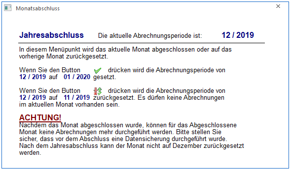
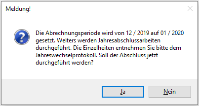
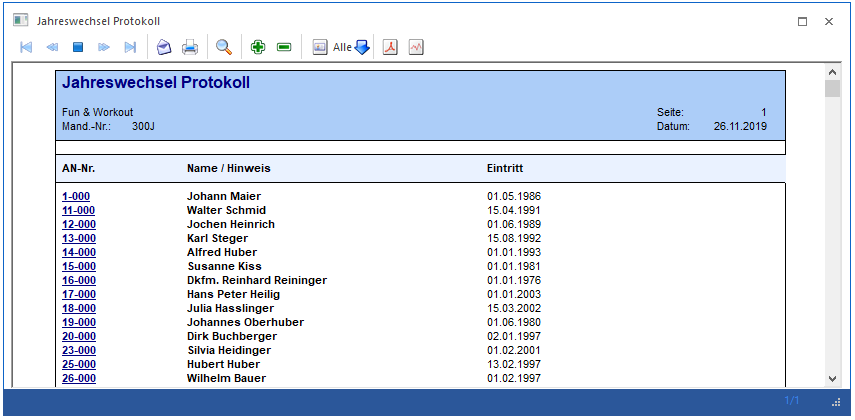
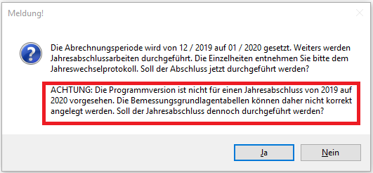
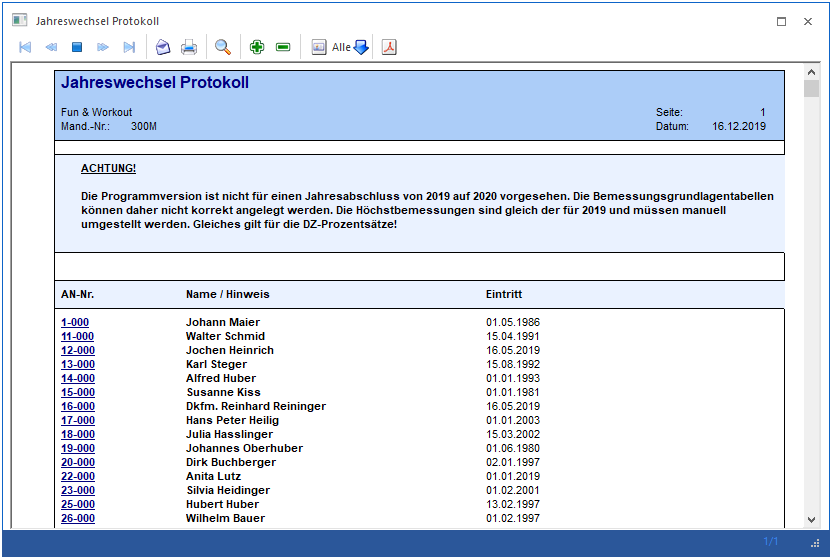

Der Monatsabschluss, der im Menüpunkt
1 Abschluss
1 Monatsabschluss
durchgeführt werden kann, bietet drei Möglichkeiten:
Abschluss eines Monats
Durch Drücken der F5-Taste oder durch Anklicken des OK-Buttons wird der Monatsabschluss durchgeführt, die Abrechnungsperiode wird um 1 erhöht. Wenn der Abschluss im Dezember durchgeführt wird, wird gleichzeitig das Abrechnungsjahr um 1 erhöht.
Achtung:
Nach einem Monatsabschluss können keine Abrechnungen mehr für ein abgeschlossenes Monat verändert werden - ausgenommen durch die Rollung - oder durch Zurücksetzen der Abrechnungsperiode. Die Abrechnungen können aber sehr wohl über den Stapeldruck jederzeit nochmals ausgegeben werden.
Hinweis:
Nach Anwahl des Menüpunktes erfolgt eine Prüfung, ob für alle aktiven AN eine Abrechnung vorhanden ist (ausgenommen davon sind AN, die zwar aktiv sind, aber erst in einer Folgeperiode eintreten). Ist das nicht der Fall, wird eine entsprechende Meldung ausgegeben.

Durch Anklicken des JA-Buttons wird die AN-Info geöffnet, in der dann ersichtlich ist, welche AN noch nicht abgerechnet wurden. Aus der AN-Info heraus könnten die fehlenden AN ggf. gleich abgerechnet werden. Durch Anklicken des NEIN-Buttons wird der angewählte Menüpunkt geöffnet und der Monatsabschluss kann durchgeführt werden.
Wiederherstellen eines Monats
Durch Anklicken des Buttons "Rückgängig" wird die zuletzt abgeschlossene Abrechnungsperiode wieder geöffnet. Diese Option kann aber nur dann verwendet werden, wenn in der Abrechnungsperiode noch keine Abrechnungen durchgeführt wurden bzw. wenn man sich in der Abrechnungsperiode Jänner befindet.
Innerhalb des Fensters wird angezeigt, welche Auswirkungen die jeweilige Aktion auf das Programm hat.
Abschluss eines Abrechnungsjahres
Beim Abschluss der Abrechnungsperiode 12 müssen besondere Abschlussarbeiten durchgeführt werden. Diese sind:
ü Löschen aller Freibeträge, die bei den AN hinterlegt sind (die Freibeträge sind immer nur bis Jahresende befristet).
ü Löschen aller Vorbezugswerte, die bei den AN hinterlegt sind, die während des Jahres eingetreten sind und ein L16 vorgewiesen haben.
ü Es wird eine neue Bemessungsgrundlagentabelle mit den für das nächste Abrechnungsjahr gültigen DB, DZ und KommSt Prozentsätzen angelegt.
Wird der Monatsabschluss im Dezember durchgeführt, werden demnach auch die entsprechenden Hinweise angezeigt:

Achtung:
Vor dem Monatsabschluss Dezember ist unbedingt eine Datensicherung durchzuführen.
Wurde der Monatsabschluss für den Dezember durchgeführt, kann dieser auch nicht mehr rückgängig gemacht werden.
Beim "Jahresabschluss" wird auch eine entsprechende Meldung ausgegeben, die auf die durchzuführenden Arbeiten hinweist. Durch Bestätigung mit JA wird der Abschluss durchgeführt werden.

Mit dem Abschluss wird ein Protokoll mit gedruckt, auf dem ersichtlich ist, welche aktiven Arbeitnehmer im Mandanten enthalten sind.

Wenn Änderungen bei AN durchgeführt werden, dann werden diese ebenfalls am Protokoll angeführt, wobei durch einen Klick auf die AN-Nummer (DrillDown) direkt in den AN-Stamm gewechselt werden kann - dort können ggf. noch notwendige Änderungen durchgeführt werden.
Dieses Protokoll wird automatisch auch als SPL-Datei im Programmverzeichnis abgespeichert, wobei als Name der Datei "Jahreswechselprotokoll-MMMM-(2019-2020).spl" (MMMM steht für die Mandantennummer) verwendet wird. Diese Protokolldatei kann im Nachhinein auch noch über den Protokoll-Button im Fenster Monatsabschluss aufgerufen und eingesehen werden.
Hinweis:
Wenn der Jahresabschluss mit einer Version durchgeführt wird, die noch nicht für das nachfolgende Jahr ausgelegt ist (weil z.B. die Höchstbemessungsgrundlagen für das nächste Jahr noch nicht bekannt sind etc.), dann wird folgende Meldung ausgegeben:

Wird die Meldung dennoch mit "JA" bestätigt, dann wird der Jahreswechsel ebenso durchgeführt, allerdings wird die Tabelle der Prozentsätze für DB, DZ und KommSt in den Bemessungsgrundlagen mit den gültigen Werten des Vorjahrs angelegt. Würden durch den Jahresabschluss Änderungen in den Stammdaten erfolgen (zB.: Vorbelegungen von neuen Eingabefeldern), so werden diese ebenfalls nicht vorgenommen. Ansonsten werden die gleichen Aktionen durchgeführt, wie bei einem "normalen" Jahresabschluss, wobei beim Jahreswechsel-Protokoll auch wieder ein entsprechender Hinweis angedruckt wird.
